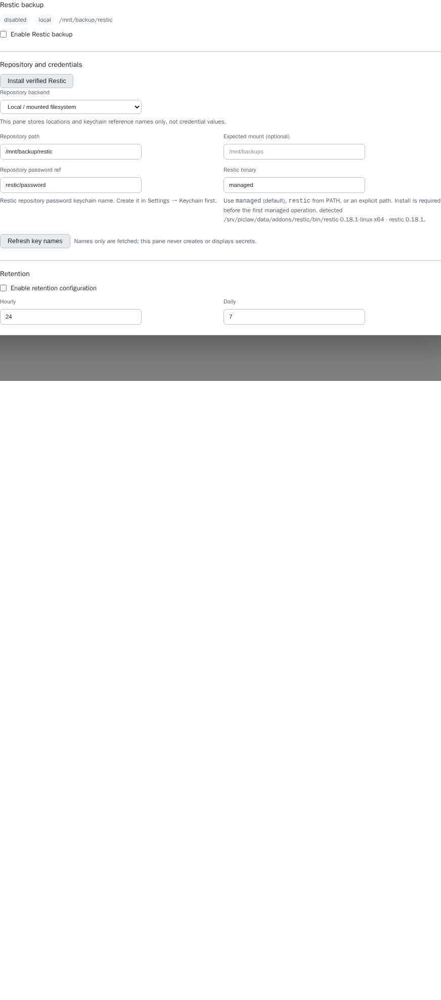

restic
extension
Settings-managed Restic backups with consistent SQLite staging and scoped retention.
One Settings-managed backup job for one repository: local/mounted NAS, SFTP,
S3-compatible storage or Azure Blob. Requires Piclaw >=3.2.3, Bun >=1.4.1,
and bzip2 for the explicit managed-binary installation. Backup and retention are disabled by default.
Open Settings → Restic and choose Install verified Restic. The explicit action
downloads upstream 0.18.1 into this add-on's private data directory, verifies the
source-pinned SHA-256 of both archive and executable, probes version/backend support,
then atomically selects it. Linux x64 and arm64 archives are pinned; x64 installation
is end-to-end tested. The default binary is managed, with no PATH fallback.
An optional custom selection (restic from PATH or an absolute path) must be 0.18.1+
and advertise local, SFTP, S3 and Azure support before credentials are resolved.
The pane reports the selected executable/version. Managed executable integrity is
rechecked on every operation. Opening Settings never downloads anything. Distribution builds can omit cloud backends:
Debian's 0.18.0 build used in testing lacked Azure; upstream 0.18.1 passed the Azure
emulator tests. A failed install keeps the previous executable. Reinstalling/upgrading is explicit;
there are no automatic downloads, unsigned checksum updates or silent fallbacks.
Select one destination and existing keychain entry names. A separate keychain reference supplies the repository encryption password. SFTP also requires an SSH private key and verified known-hosts data; host checking cannot be disabled. S3 requires HTTPS; private CAs must be trusted by the operating system. Azure uses an account key. No bucket/account provisioning, arbitrary commands or ambient cloud credential inheritance is provided.
Test connection reads repository configuration. It cannot initialise a repository. Initialise repository requires separate confirmation. Back up now works while automatic scheduling is disabled. List snapshots, Check metadata, and Refresh status are explicit actions. The pane never polls or runs repository operations on opening. Long actions run in the background; Refresh status displays completion and errors, and Cancel terminates child work.
The restic tool is available to agents when the add-on's startup runtime is loaded:
get_config with config: null returns the current instance configuration, containing keychain names only.set_config accepts the complete configuration returned by get_config with edits.status with config: null returns the current job state.Example: call restic with {"action":"get_config","config":null}, change the schedule or retention
fields in the returned config, then call {"action":"set_config","config":...}.
Strict-schema providers may send unused repository fields as null; the tool removes
those placeholders before backend validation. set_config always needs a complete
configuration object. Enabling the schedule permits future automatic backups. The same backend validation,
operation lock, previous-scheduler detection and successful-backup checks apply to
agent and Settings writes. No migration acknowledgement checkbox is needed; legacy
saved boolean values are accepted and discarded on save.
Use the keychain tool separately to manage secrets. The Restic tool does not retrieve
secret values, install binaries, execute immediate backup/restore/prune operations or
change external schedulers. Loading it does not start another scheduler. The add-on
is tagged core in the catalogue.
The host workspace plus separately configured PICLAW_STORE, PICLAW_DATA and
PI_CODING_AGENT_DIR are included (overlapping roots are deduplicated). Without
an explicit Pi profile, the conventional user .pi/agent is included if present.
Review the displayed roots and exclusions before the first backup.
Staging and cache use a stable instance-specific temporary path outside source roots. If host TMPDIR lies in a source, Linux falls back to /tmp then /var/tmp. PICLAW_RESTIC_STAGING_ROOT can select an existing external scratch directory; unsafe overrides fail closed. Version 0.1.1 fixes workspace-local TMPDIR deployments. Staging must be absent before a job; interrupted staging requires operator inspection. The add-on's own job-state directory is excluded to avoid copying its active lock. Keep the instance identity, staging path and recovery materials separately, as described in Recovery and migration.
Every regular file with a SQLite header is read through SQLite, including committed
WAL data. Database.serialize() produces a standalone snapshot which passes
quick_check; the standalone header selects rollback-journal mode. Live files and
WALs are never deleted. SQLite serialization uses memory proportional to the DB.
Snapshots are consistent per database, not a simultaneous transaction across
all databases/files. Stop application writes for a globally quiescent backup.
Relative symlinks are preserved only within a source root; absolute/escaping links,
special files, missing roots, empty output and unreadable files fail explicitly.
Exclusions are Bun glob patterns against relative paths or source-name/path.
SQLite sidecars are omitted only alongside a recognised database. Defaults exclude
node_modules, cache directories and legacy Restic env/password files. Review any
additional transport-secret paths; the add-on does not guess arbitrary credentials.
The runner uses argument arrays, an allowlisted environment, bounded output, timeouts, cancellation and POSIX process groups. Low priority is best effort. SFTP keys are temporarily mode-0600 files under a mode-0700 directory, deleted on normal completion and before the next admitted operation. After a hard crash, inspect/remove abandoned credentials as part of recovery. No force-unlock exists.
Choose daily hours, minute and an IANA timezone. The migration preset is hourly 08–22 plus 23, 03 and 07. One durable next-run cursor handles downtime with one catch-up, never a backlog burst. The process-owned 30-second scheduler makes no model calls. An atomic directory lock prevents concurrent manual/scheduled jobs and other add-on service instances; interrupted locks require operator recovery.
Enable scheduling after a successful manual backup to this configuration and
after stopping the old scheduler. No acknowledgement checkbox is required. On Linux the add-on also
detects restic-backup.timer, its service and the known legacy loop. Other scheduler
names require operator verification. The add-on never changes systemd units itself.
Retention is a separate opt-in action, not an automatic post-backup delete. Preview exact snapshot IDs scoped to the stable instance host, tag and staging path, then confirm within five minutes. Apply rechecks the preview before forgetting IDs. Failed or incomplete backups block maintenance. Each job reloads durable state under the shared lock; a persisted backup-attempt ID invalidates previews across service instances, including when a new attempt creates no snapshot. Backup and prune outcomes remain separate. Changing repositories clears backup-success eligibility. Prune is repository-wide unreferenced-data reclamation and can be expensive in shared repos; it does not remove other instances' retained snapshots.
Restore accepts only this instance's snapshots and an existing empty, canonical directory outside all live roots, state, cache and repository. It verifies manifest hashes and SQLite integrity. Cutover is always manual; there is no overwrite-live button. The manifest detects damaged/mismatched restore contents; repository credentials remain a trust boundary.
bun test addons/restic runs offline unit/lifecycle tests. Set
PICLAW_RESTIC_TEST_BINARY to a qualified 0.18.1+ executable for the real local
repository test. CI downloads the pinned test binary and verifies its archive hash.
bunx tsc -p addons/restic/tsconfig.json checks the TypeScript modules.
Opt-in disposable tests (use a qualified PICLAW_RESTIC_TEST_BINARY):
PICLAW_RESTIC_INSTALL_E2E=1 PICLAW_E2E_DISPOSABLE=1: actual checksum-verified
upstream download/install/capability/integrity checks into temporary state.
PICLAW_E2E_DISPOSABLE=1 PICLAW_SETTINGS_CORE_SOURCE=/path/to/piclaw: actual
Classic/Visual host light/dark, desktop/phone persistence and actions.
PICLAW_RESTIC_SFTP=1 PICLAW_E2E_DISPOSABLE=1: ephemeral loopback OpenSSH server
and strict host-key rejection; requires sudo for that test-owned daemon only.
PICLAW_RESTIC_S3=1 PICLAW_E2E_DISPOSABLE=1: RustFS in a disposable Docker
container, HTTPS proxy and explicitly trusted test CA.
PICLAW_RESTIC_AZURE=1 PICLAW_E2E_DISPOSABLE=1 PICLAW_RESTIC_TEST_BINARY=/path/to/upstream/restic: disposable Azurite over
trusted TLS. Uses test-only endpoint/access-tier options; not a live Azure test.
Cloud tests require their documented Docker images already available. No production credentials, repository or daemon configuration is used. Linux/Bun is the qualified runtime for v1; other platforms have not passed the process/SSH/mount matrix.

Screenshot uses the real Settings host in a disposable browser fixture with synthetic paths/status; it is not a production backup or deployment screenshot.